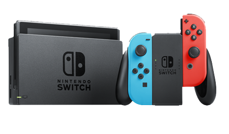
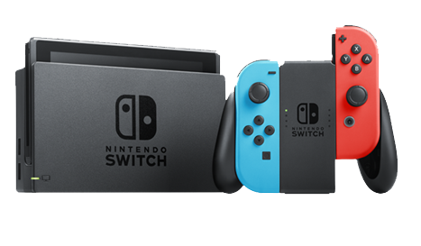

The Ultimate Home and Travel Console!
Play your favorite games on the go with the Nintendo Switch. This console features a 6.2-inch screen, so you can enjoy your favorite games in handheld mode. The Switch also includes a dock that lets you connect the console to your TV for a more immersive gaming experience. The Joy-Con controllers can be attached to the sides of the console for easy portability, or they can be used as a pair for traditional gaming. The Switch also features a 3.5mm headphone jack, so you can listen to your favorite music while you play.

What's it all about?
Are you looking for a gaming system that's versatile, portable, and packed with fun games? Look no further than the Nintendo Switch! With its innovative design, you can play your favorite games at home on your TV, or take the action on the go with its handheld mode. The Nintendo Switch is perfect for people who are always on the move, or for those who want to enjoy their favorite games no matter where they are. And speaking of games, the Nintendo Switch has an incredible library of titles to choose from, including classic franchises like Mario and Zelda, as well as exciting new titles like Animal Crossing: New Horizons, Splatoon 2, and more. Plus, with the ability to connect with other Switch players online, you can enjoy multiplayer games with friends and family from all over the world. But the Nintendo Switch is more than just a gaming system - it's a way to connect with others, to explore new worlds, and to experience joy in a whole new way. So why wait? Get your hands on a Nintendo Switch today and start your adventure!
 
